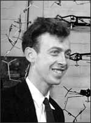

James Dewey Watson
1928–Present
Even as a kid, James Watson was good at figuring things out. Growing up in Chicago, where he was born on April 6, 1928, he used to go bird-watching with his father and read the World Almanac—just for fun. He once won $100 as a "Quiz Kid" on a local radio show. He started college at the age of 15, through a special program for gifted students at the University of Chicago.
At first, young Watson wanted to go into ornithology—the scientific study of birds. Then he read a book by Erwin Schrödinger called What is Life? The Physical Aspect of the Living Cell. The book postulated that the secret of life lies in genes and chromosomes. Watson was captivated. He wanted to be the one to discover how genes and chromosomes work.
In 1950, Watson received his Ph.D. from Indiana University and went to Copenhagen, Denmark, on a yearlong fellowship. There he tried to understand DNA by conducting research on bacterial viruses. At a conference in Naples, Italy, he met Maurice Wilkins, a researcher from King's College in London. As Watson learned about the work that Wilkins was doing on the structure of nucleic acids and proteins, he decided to refocus his own work in a similar direction.
In 1951, Watson went to work at Cambridge University, where he shared an office with another ambitious researcher, Francis Crick. Together Watson and Crick struggled to understand the structure of DNA. Then, Maurice Wilkins provided them with some data from one of his colleagues at King's College, Rosalind Franklin. When Watson and Crick saw Franklin's data, they made the intuitive leap that allowed them to unlock the secret of DNA.
One of Franklin's photos showed that the DNA molecule is shaped like a helix. Playing with cardboard cutouts of the four bases found in DNA—adenine, thymine, guanine, and cytosine—Watson realized that if he paired adenine with thymine and guanine with cytosine, the resultant base pairs were identical in shape and size. Together he and Crick conjectured that DNA is shaped like a double helix, with the pairs of bases linking together the two outer strands. They built a three-dimensional model to illustrate their idea, and then, in 1953, they published an article entitled "Molecular Structure of Nucleic Acids: A Structure for Deoxyribose Nucleic Acid."
The article quickly made them famous. Watson went on to teach at the California Institute of Technology and Harvard University. In 1962, he and Crick received the Nobel prize for physiology or medicine for their 1953 discovery, together with Maurice Wilkins. (Rosalind Franklin, whose data they had used, was not mentioned in the award. She had passed away in 1958.)
Watson has been a notorious figure in the world of science. In 1968, he published The Double Helix: A Personal Account of the Discovery of the Structure of DNA, which told the story not only of the scientific discovery but also of the ambition and interpersonal conflicts among the scientists who were competing to unlock the secret. That same year, Watson became the director of Cold Spring Harbor Laboratory (in New York); under his leadership, it became one of the world's leading research centers for molecular biology. Watson also served as the head of the National Institutes of Health's controversial Human Genome Project until 1992. Watson is still actively involved in DNA research.